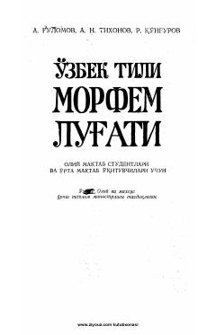

OTO'zbek tilining ilk morfem lug'ati so'zlarni morfemalarga ajratib o'rganish uchun mo'ljallangan.
Ushbu lug'at o'zbek tilining ilk morfem lug'ati bo'lib, so'zlarni morfemalarga bo'lingan holda alifbo tartibida taqdim etadi. Qo'llanma oliy maktab talabalari va o'rta maktab o'qituvchilari uchun mo'ljallangan bo'lib, so'zlarning morfemik tarkibini o'rganishda yordam beradi.